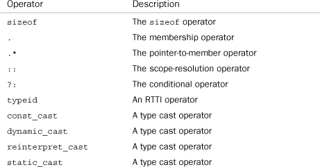
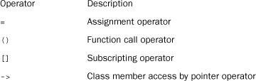
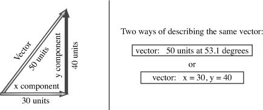

In this chapter you’ll learn about the following:
• Operator overloading
• Friend functions
• Overloading the << operator for output
• State members
• Using rand() to generate random values
• Automatic conversions and type casts for classes
• Class conversion functions
C++ classes are feature-rich, complex, and powerful. In Chapter 10, “Objects and Classes,” you began a journey toward object-oriented programming by learning to define and use a simple class. You saw how a class defines a data type by defining the type of data to be used to represent an object and by also defining, through member functions, the operations that can be performed with that data. And you learned about two special member functions, the constructor and the destructor, that manage creating and discarding objects made to a class specification. This chapter takes you a few steps further in the exploration of class properties, concentrating on class design techniques rather than on general principles. You’ll probably find some of the features covered here straightforward and some a bit more subtle. To best understand these new features, you should try the examples and experiment with them: What happens if you use a regular argument instead of a reference argument for this function? What happens if you leave something out of a destructor? Don’t be afraid to make mistakes; usually you can learn more from unraveling an error than by doing something correctly but by rote. (However, don’t assume that a maelstrom of mistakes inevitably leads to incredible insight.) In the end, you’ll be rewarded with a fuller understanding of how C++ works and of what C++ can do for you.
This chapter starts with operator overloading, which lets you use standard C++ operators such as = and + with class objects. Then it examines friends, the C++ mechanism for letting nonmember functions access private data. Finally, it looks at how you can instruct C++ to perform automatic type conversions with classes. As you go through this chapter and Chapter 12, “Classes and Dynamic Memory Allocation,” you’ll gain a greater appreciation of the roles class constructors and class destructors play. Also you’ll see some of the stages you may go through as you develop and improve a class design.
One difficulty with learning C++, at least by the time you’ve gotten this far into the subject, is that there is an awful lot to remember. And it’s unreasonable to expect to remember it all until you’ve logged enough experience on which to hang your memories. Learning C++, in this respect, is like learning a feature-laden word processor or spreadsheet program. No one feature is that daunting, but, in practice, most people really know well only those features they use regularly, such as searching for text or italicizing. You may recall having read somewhere how to generate alternative characters or create a table of contents, but those skills probably won’t be part of your daily repertoire until you face a situation in which you need them frequently. Probably the best approach to absorbing the wealth of material in this chapter is to begin incorporating just some of these new features into your own C++ programming. As your experiences enhance your understanding and appreciation of these features, you can begin adding other C++ features. As Bjarne Stroustrup, the creator of C++, suggested at a C++ conference for professional programmers: “Ease yourself into the language. Don’t feel you have to use all of the features, and don’t try to use them all on the first day.”
Let’s look at a technique for giving object operations a prettier look. Operator overloading is an example of C++ polymorphism. In Chapter 8, “Adventures in Functions,” you saw how C++ enables you to define several functions that have the same name, provided that they have different signatures (argument lists). That is called function overloading, or functional polymorphism. Its purpose is to let you use the same function name for the same basic operation, even though you apply the operation to different data types. (Imagine how awkward English would be if you had to use a different verb form for each different type of object—for example, lift_lft your left foot, but lift_sp your spoon.) Operator overloading extends the overloading concept to operators, letting you assign multiple meanings to C++ operators. Actually, many C++ (and C) operators already are overloaded. For example, the * operator, when applied to an address, yields the value stored at that address. But applying * to two numbers yields the product of the values. C++ uses the number and type of operands to decide which action to take.
C++ lets you extend operator overloading to user-defined types, permitting you, say, to use the + symbol to add two objects. Again, the compiler uses the number and type of operands to determine which definition of addition to use. Overloaded operators can often make code look more natural. For example, a common computing task is adding two arrays. Usually, this winds up looking like the following for loop:
for (int i = 0; i < 20; i++)
evening[i] = sam[i] + janet[i]; // add element by element
But in C++, you can define a class that represents arrays and that overloads the + operator so that you can do this:
evening = sam + janet; // add two array objects
This simple addition notation conceals the mechanics and emphasizes what is essential, and that is another goal of OOP.
To overload an operator, you use a special function form called an operator function. An operator function has the following form, where op is the symbol for the operator being overloaded:
operatorop(argument-list)
For example, operator+() overloads the + operator and operator*() overloads the * operator. The op has to be a valid C++ operator; you can’t just make up a new symbol. For example, you can’t have an operator@() function because C++ has no @ operator. But the operator[]() function would overload the [] operator because [] is the array-indexing operator. Suppose, for example, that you have a Salesperson class for which you define an operator+() member function to overload the + operator so that it adds sales figures of one salesperson object to another. Then, if district2, sid, and sara are all objects of the Salesperson class, you can write this equation:
district2 = sid + sara;
The compiler, recognizing the operands as belonging to the Salesperson class, replaces the operator with the corresponding operator function:
district2 = sid.operator+(sara);
The function then uses the sid object implicitly (because it invoked the method) and the sara object explicitly (because it’s passed as an argument) to calculate the sum, which it then returns. Of course, the nice part is that you can use the nifty + operator notation instead of the clunky function notation.
C++ imposes some restrictions on operator overloading, but they’re easiest to understand after you’ve seen how overloading works. So let’s develop a few examples to clarify the process and then discuss the limitations.
If you worked on the Priggs account for 2 hours 35 minutes in the morning and 2 hours 40 minutes in the afternoon, how long did you work altogether on the account? Here’s an example where the concept of addition makes sense, but the units that you are adding (a mixture of hours and minutes) don’t match a built-in type. Chapter 7, “Functions: C++’s Programming Modules,” handles a similar case by defining a travel_time structure and a sum() function for adding such structures. Now let’s generalize that to a Time class, using a method to handle addition. Let’s begin with an ordinary method, called Sum(), and then see how to convert it to an overloaded operator. Listing 11.1 shows the class declaration.
// mytime0.h -- Time class before operator overloading
#ifndef MYTIME0_H_
#define MYTIME0_H_
class Time
{
private:
int hours;
int minutes;
public:
Time();
Time(int h, int m = 0);
void AddMin(int m);
void AddHr(int h);
void Reset(int h = 0, int m = 0);
Time Sum(const Time & t) const;
void Show() const;
};
#endif
The Time class provides methods for adjusting and resetting times, for displaying time values, and for adding two times. Listing 11.2 shows the methods definitions; note how the AddMin() and Sum() methods use integer division and the modulus operator to adjust the minutes and hours values when the total number of minutes exceeds 59. Also because the only iostream feature used is cout and because it is used only once, it seems economical to use std::cout rather than use the whole std namespace.
// mytime0.cpp -- implementing Time methods
#include <iostream>
#include "mytime0.h"
Time::Time()
{
hours = minutes = 0;
}
Time::Time(int h, int m )
{
hours = h;
minutes = m;
}
void Time::AddMin(int m)
{
minutes += m;
hours += minutes / 60;
minutes %= 60;
}
void Time::AddHr(int h)
{
hours += h;
}
void Time::Reset(int h, int m)
{
hours = h;
minutes = m;
}
Time Time::Sum(const Time & t) const
{
Time sum;
sum.minutes = minutes + t.minutes;
sum.hours = hours + t.hours + sum.minutes / 60;
sum.minutes %= 60;
return sum;
}
void Time::Show() const
{
std::cout << hours << " hours, " << minutes << " minutes";
}
Consider the code for the Sum() function. Note that the argument is a reference but that the return type is not a reference. The reason for making the argument a reference is efficiency. The code would produce the same results if the Time object were passed by value, but it’s usually faster and more memory-efficient to just pass a reference.
However, the return value cannot be a reference. The reason is that the function creates a new Time object (sum) that represents the sum of the other two Time objects. Returning the object, as this code does, creates a copy of the object that the calling function can use. If the return type were Time &, however, the reference would be to the sum object. But the sum object is a local variable and is destroyed when the function terminates, so the reference would be a reference to a non-existent object. Using a Time return type, however, means the program constructs a copy of sum before destroying it, and the calling function gets the copy.
Don’t return a reference to a local variable or another temporary object. When the function terminates and the local variable or temporary object disappears, the reference becomes a reference to non-existent data.
Finally, Listing 11.3 tests the time summation part of the Time class.
// usetime0.cpp -- using the first draft of the Time class
// compile usetime0.cpp and mytime0.cpp together
#include <iostream>
#include "mytime0.h"
int main()
{
using std::cout;
using std::endl;
Time planning;
Time coding(2, 40);
Time fixing(5, 55);
Time total;
cout << "planning time = ";
planning.Show();
cout << endl;
cout << "coding time = ";
coding.Show();
cout << endl;
cout << "fixing time = ";
fixing.Show();
cout << endl;
total = coding.Sum(fixing);
cout << "coding.Sum(fixing) = ";
total.Show();
cout << endl;
return 0;
}
Here is the output of the program in Listings 11.1, 11.2, and 11.3:
planning time = 0 hours, 0 minutes
coding time = 2 hours, 40 minutes
fixing time = 5 hours, 55 minutes
coding.Sum(fixing) = 8 hours, 35 minutes
It’s a simple matter to convert the Time class to using an overloaded addition operator. You just change the name of Sum() to the odder-looking name operator+(). That’s right: You just append the operator symbol (+, in this case) to the end of operator and use the result as a method name. This is one place where you can use a character other than a letter, a digit, or an underscore in an identifier name. Listings 11.4 and 11.5 reflect this small change.
// mytime1.h -- Time class before operator overloading
#ifndef MYTIME1_H_
#define MYTIME1_H_
class Time
{
private:
int hours;
int minutes;
public:
Time();
Time(int h, int m = 0);
void AddMin(int m);
void AddHr(int h);
void Reset(int h = 0, int m = 0);
Time operator+(const Time & t) const;
void Show() const;
};
#endif
// mytime1.cpp -- implementing Time methods
#include <iostream>
#include "mytime1.h"
Time::Time()
{
hours = minutes = 0;
}
Time::Time(int h, int m )
{
hours = h;
minutes = m;
}
void Time::AddMin(int m)
{
minutes += m;
hours += minutes / 60;
minutes %= 60;
}
void Time::AddHr(int h)
{
hours += h;
}
void Time::Reset(int h, int m)
{
hours = h;
minutes = m;
}
Time Time::operator+(const Time & t) const
{
Time sum;
sum.minutes = minutes + t.minutes;
sum.hours = hours + t.hours + sum.minutes / 60;
sum.minutes %= 60;
return sum;
}
void Time::Show() const
{
std::cout << hours << " hours, " << minutes << " minutes";
}
Like Sum(), operator+() is invoked by a Time object, takes a second Time object as an argument, and returns a Time object. Thus, you can invoke the operator+() method by using the same syntax that Sum() uses:
total = coding.operator+(fixing); // function notation
But naming the method operator+() also lets you use operator notation:
total = coding + fixing; // operator notation
Either notation invokes the operator+() method. Note that with the operator notation, the object to the left of the operator (coding, in this case) is the invoking object, and the object to the right (fixing, in this case) is the one passed as an argument. Listing 11.6 illustrates this point.
// usetime1.cpp -- using the second draft of the Time class
// compile usetime1.cpp and mytime1.cpp together
#include <iostream>
#include "mytime1.h"
int main()
{
using std::cout;
using std::endl;
Time planning;
Time coding(2, 40);
Time fixing(5, 55);
Time total;
cout << "planning time = ";
planning.Show();
cout << endl;
cout << "coding time = ";
coding.Show();
cout << endl;
cout << "fixing time = ";
fixing.Show();
cout << endl;
total = coding + fixing;
// operator notation
cout << "coding + fixing = ";
total.Show();
cout << endl;
Time morefixing(3, 28);
cout << "more fixing time = ";
morefixing.Show();
cout << endl;
total = morefixing.operator+(total);
// function notation
cout << "morefixing.operator+(total) = ";
total.Show();
cout << endl;
return 0;
}
Here is the output of the program in Listings 11.4, 11.5, and 11.6:
planning time = 0 hours, 0 minutes
coding time = 2 hours, 40 minutes
fixing time = 5 hours, 55 minutes
coding + fixing = 8 hours, 35 minutes
more fixing time = 3 hours, 28 minutes
morefixing.operator+(total) = 12 hours, 3 minutes
In short, the name of the operator+() function allows it to be invoked by using either function notation or operator notation. The compiler uses the operand types to figure out what to do:
int a, b, c;
Time A, B, C;
c = a + b; // use int addition
C = A + B; // use addition as defined for Time objects
Can you add more than two objects? For example, if t1, t2, t3, and t4 are all Time objects, can you do the following?
t4 = t1 + t2 + t3; // valid?
The way to answer this is to consider how the statement gets translated into function calls. Because addition is a left-to-right operator, the statement is first translated to this:
t4 = t1.operator+(t2 + t3); // valid?
Then the function argument is itself translated to a function call, giving the following:
t4 = t1.operator+(t2.operator+(t3)); // valid? YES
Is this valid? Yes, it is. The function call t2.operator+(t3) returns a Time object that represents the sum of t2 and t3. This object then becomes the object of the t1.operator+() function call, and that call returns the sum of t1 and the Time object that represents the sum of t2 and t3. In short, the final return value is the sum of t1, t2, and t3, just as desired.
Most C++ operators (see Table 11.1) can be overloaded in the manner described in the preceding section. Overloaded operators (with some exceptions) don’t necessarily have to be member functions. However, at least one of the operands has to be a user-defined type. Let’s take a closer look at the limits C++ imposes on user-defined operator overloading:
• The overloaded operator must have at least one operand that is a user-defined type. This prevents you from overloading operators for the standard types. Thus, you can’t redefine the minus operator (-) so that it yields the sum of two double values instead of their difference. This restriction preserves program sanity, although it may hinder creative accounting.
• You can’t use an operator in a manner that violates the syntax rules for the original operator. For example, you can’t overload the modulus operator (%) so that it can be used with a single operand:
int x;
Time shiva;
% x; // invalid for modulus operator
% shiva; // invalid for overloaded operator
Similarly, you can’t alter operator precedence. So if you overload the addition operator to let you add two classes, the new operator has the same precedence as ordinary addition.
• You can’t create new operator symbols. For example, you can’t define an operator**() function to denote exponentiation.
• You cannot overload the following operators:

This still leaves all the operators in Table 11.1 available for overloading.
• Most of the operators in Table 11.1 can be overloaded by using either member or nonmember functions. However, you can use only member functions to overload the following operators:

Table 11.1. Operators That Can Be Overloaded
This chapter does not cover every operator mentioned in the list of restrictions or in Table 11.1. However, Appendix E, “Other Operators,” summarizes the operators that are not covered in the main body of this text.
In addition to these formal restrictions, you should use sensible restraint in overloading operators. For example, you shouldn’t overload the * operator so that it swaps the data members of two Time objects. Nothing in the notation would suggest what the operator did, so it would be better to define a class method with an explanatory name such as Swap().
Some other operations make sense for the Time class. For example, you might want to subtract one time from another or multiply a time by a factor. This suggests overloading the subtraction and multiplication operators. The technique is the same as for the addition operator: you create operator-() and operator*() methods. That is, you add the following prototypes to the class declaration:
Time operator-(const Time & t) const;
Time operator*(double n) const;
Listing 11.7 shows the new header file.
// mytime2.h -- Time class after operator overloading
#ifndef MYTIME2_H_
#define MYTIME2_H_
class Time
{
private:
int hours;
int minutes;
public:
Time();
Time(int h, int m = 0);
void AddMin(int m);
void AddHr(int h);
void Reset(int h = 0, int m = 0);
Time operator+(const Time & t) const;
Time operator-(const Time & t) const;
Time operator*(double n) const;
void Show() const;
};
#endif
Then you add definitions for the new methods to the implementation file, as shown in Listing 11.8.
// mytime2.cpp -- implementing Time methods
#include <iostream>
#include "mytime2.h"
Time::Time()
{
hours = minutes = 0;
}
Time::Time(int h, int m )
{
hours = h;
minutes = m;
}
void Time::AddMin(int m)
{
minutes += m;
hours += minutes / 60;
minutes %= 60;
}
void Time::AddHr(int h)
{
hours += h;
}
void Time::Reset(int h, int m)
{
hours = h;
minutes = m;
}
Time Time::operator+(const Time & t) const
{
Time sum;
sum.minutes = minutes + t.minutes;
sum.hours = hours + t.hours + sum.minutes / 60;
sum.minutes %= 60;
return sum;
}
Time Time::operator-(const Time & t) const
{
Time diff;
int tot1, tot2;
tot1 = t.minutes + 60 * t.hours;
tot2 = minutes + 60 * hours;
diff.minutes = (tot2 - tot1) % 60;
diff.hours = (tot2 - tot1) / 60;
return diff;
}
Time Time::operator*(double mult) const
{
Time result;
long totalminutes = hours * mult * 60 + minutes * mult;
result.hours = totalminutes / 60;
result.minutes = totalminutes % 60;
return result;
}
void Time::Show() const
{
std::cout << hours << " hours, " << minutes << " minutes";
}
With these changes made, you can test the new definitions with the code shown in Listing 11.9.
// usetime2.cpp -- using the third draft of the Time class
// compile usetime2.cpp and mytime2.cpp together
#include <iostream>
#include "mytime2.h"
int main()
{
using std::cout;
using std::endl;
Time weeding(4, 35);
Time waxing(2, 47);
Time total;
Time diff;
Time adjusted;
cout << "weeding time = ";
weeding.Show();
cout << endl;
cout << "waxing time = ";
waxing.Show();
cout << endl;
cout << "total work time = ";
total = weeding + waxing; // use operator+()
total.Show();
cout << endl;
diff = weeding - waxing; // use operator-()
cout << "weeding time - waxing time = ";
diff.Show();
cout << endl;
adjusted = total * 1.5; // use operator+()
cout << "adjusted work time = ";
adjusted.Show();
cout << endl;
return 0;
}
Here is the output of the program in Listings 11.7, 11.8, and 11.9:
weeding time = 4 hours, 35 minutes
waxing time = 2 hours, 47 minutes
total work time = 7 hours, 22 minutes
weeding time - waxing time = 1 hours, 48 minutes
adjusted work time = 11 hours, 3 minutes
As you’ve seen, C++ controls access to the private portions of a class object. Usually, public class methods serve as the only access, but sometimes this restriction is too rigid to fit particular programming problems. In such cases, C++ provides another form of access: the friend. Friends come in three varieties:
• Friend functions
• Friend classes
• Friend member functions
By making a function a friend to a class, you allow the function the same access privileges that a member function of the class has. We’ll look into friend functions now, leaving the other two varieties to Chapter 15, “Friends, Exceptions, and More.”
Before seeing how to make friends, let’s look into why they might be needed. Often, overloading a binary operator (that is, an operator with two arguments) for a class generates a need for friends. Multiplying a Time object by a real number provides just such a situation, so let’s study that case.
In the previous Time class example, the overloaded multiplication operator is different from the other two overloaded operators in that it combines two different types. That is, the addition and subtraction operators each combine two Time values, but the multiplication operator combines a Time value with a double value. This restricts how the operator can be used. Remember, the left operand is the invoking object. That is,
A = B * 2.75;
translates to the following member function call:
A = B.operator*(2.75);
But what about the following statement?
A = 2.75 * B; // cannot correspond to a member function
Conceptually, 2.75 * B should be the same as B * 2.75, but the first expression cannot correspond to a member function because 2.75 is not a type Time object. Remember, the left operand is the invoking object, but 2.75 is not an object. So the compiler cannot replace the expression with a member function call.
One way around this difficulty is to tell everyone (and to remember yourself) that you can only write B * 2.75 but never write 2.75 * B. This is a server-friendly, client-beware solution, and that’s not what OOP is about.
However, there is another possibility—using a nonmember function. (Remember, most operators can be overloaded using either member or nonmember functions.) A nonmember function is not invoked by an object; instead, any values it uses, including objects, are explicit arguments. Thus, the compiler could match the expression
A = 2.75 * B; // cannot correspond to a member function
to the following nonmember function call:
A = operator*(2.75, B);
The function would have this prototype:
Time operator*(double m, const Time & t);
With the nonmember overloaded operator function, the left operand of an operator expression corresponds to the first argument of the operator function, and the right operand corresponds to the second argument. Meanwhile, the original member function handles operands in the opposite order—that is, a Time value multiplied by a double value.
Using a nonmember function solves the problem of getting the operands in the desired order (first double and then Time), but it raises a new problem: Nonmember functions can’t directly access private data in a class. Well, at least ordinary nonmember functions lack access. But there is a special category of nonmember functions, called friends, that can access private members of a class.
The first step toward creating a friend function is to place a prototype in the class declaration and prefix the declaration with the keyword friend:
friend Time operator*(double m, const Time & t); // goes in class declaration
This prototype has two implications:
• Although the operator*() function is declared in the class declaration, it is not a member function. So it isn’t invoked by using the membership operator.
• Although the operator*() function is not a member function, it has the same access rights as a member function.
The second step is to write the function definition. Because it is not a member function, you don’t use the Time:: qualifier. Also you don’t use the friend keyword in the definition. The definition should look like this:
Time operator*(double m, const Time & t) // friend not used in definition
{
Time result;
long totalminutes = t.hours * mult * 60 +t. minutes * mult;
result.hours = totalminutes / 60;
result.minutes = totalminutes % 60;
return result;
}
With this declaration and definition, the statement
A = 2.75 * B;
translates to the following and invokes the nonmember friend function just defined:
A = operator*(2.75, B);
In short, a friend function to a class is a nonmember function that has the same access rights as a member function.
Actually, you can write this particular friend function as a non-friend by altering the definition so that it switches which value comes first in the multiplication:
Time operator*(double m, const Time & t)
{
return t * m; // use t.operator*(m)
}
The original version accessed t.minutes and t.hours explicitly, so it had to be a friend. This version only uses the Time object t as a whole, letting a member function handle the private values, so this version doesn’t have to be a friend. Nonetheless, there are reasons to make this version a friend, too. Most importantly, it ties the function in as part of the official class interface. Second, if you later find a need for the function to access private data directly, you only have to change the function definition and not the class prototype.
If you want to overload an operator for a class and you want to use the operator with a nonclass term as the first operand, you can use a friend function to reverse the operand order.
<< OperatorOne very useful feature of classes is that you can overload the << operator so that you can use it with cout to display an object’s contents. In some ways, this overloading is a bit trickier than the earlier examples, so we’ll develop it in two steps instead of in one.
Suppose trip is a Time object. To display Time values, we’ve been using Show(). Wouldn’t it be nice, however, if you could do the following?
cout << trip; // make cout recognize Time class?
You can do this because << is one of the C++ operators that can be overloaded. In fact, it already is heavily overloaded. In its most basic incarnation, the << operator is one of C and C++’s bit manipulation operators; it shifts bits left in a value (see Appendix E). But the ostream class overloads the operator, converting it into an output tool. Recall that cout is an ostream object and that it is smart enough to recognize all the basic C++ types. That’s because the ostream class declaration includes an overloaded operator<<() definition for each of the basic types. That is, one definition uses an int argument, one uses a double argument, and so on. So one way to teach cout to recognize a Time object is to add a new function operator definition to the ostream class declaration. But it’s a dangerous idea to alter the iostream file and mess around with a standard interface. Instead, use the Time class declaration to teach the Time class how to use cout.
<<To teach the Time class to use cout, you can use a friend function. Why? Because a statement like the following uses two objects, with the ostream class object (cout) first:
cout << trip;
If you use a Time member function to overload <<, the Time object would come first, as it did when you overloaded the * operator with a member function. That means you would have to use the << operator this way:
trip << cout; // if operator<<() were a Time member function
This would be confusing. But by using a friend function, you can overload the operator this way:
void operator<<(ostream & os, const Time & t)
{
os << t.hours << " hours, " << t.minutes << " minutes";
}
This lets you use
cout << trip;
to print data in the following format:
4 hours, 23 minutes
Note that the new operator<<() definition uses the ostream reference os as its first argument. Normally, os refers to the cout object, as it does in the expression cout << trip. But you could use the operator with other ostream objects, in which case os would refer to those objects.
The call cout << trip should use the cout object itself, not a copy, so the function passes the object as a reference instead of by value. Thus, the expression cout << trip causes os to be an alias for cout, and the expression cerr << trip causes os to be an alias for cerr. The Time object can be passed by value or by reference because either form makes the object values available to the function. Again, passing by reference uses less memory and time than passing by value.
<<The implementation just presented has a problem. Statements such as this work fine:
cout << trip;
But the implementation doesn’t allow you to combine the redefined << operator with the ones cout normally uses:
cout << "Trip time: " << trip << " (Tuesday)\n"; // can't do
To understand why this doesn’t work and what must be done to make it work, you first need to know a bit more about how cout operates. Consider the following statements:
int x = 5;
int y = 8;
cout << x << y;
C++ reads the output statement from left to right, meaning it is equivalent to the following:
(cout << x) << y;
The << operator, as defined in iostream, takes an ostream object to its left. Clearly, the expression cout << x satisfies that requirement because cout is an ostream object. But the output statement also requires that the whole expression (cout << x) be a type ostream object because that expression is to the left of << y. Therefore, the ostream class implements the operator<<() function so that it returns a reference to an ostream object. In particular, it returns a reference to the invoking object—cout, in this case. Thus, the expression (cout << x) is itself the ostream object cout, and it can be used to the left of the << operator.
You can take the same approach with the friend function. You just revise the operator<<() function so that it returns a reference to an ostream object:
ostream & operator<<(ostream & os, const Time & t)
{
os << t.hours << " hours, " << t.minutes << " minutes";
return os;
}
Note that the return type is ostream &. Recall that this means that the function returns a reference to an ostream object. Because a program passes an object reference to the function to begin with, the net effect is that the function’s return value is just the object passed to it. That is, the statement
cout << trip;
becomes the following function call:
operator<<(cout, trip);
And that call returns the cout object. So now the following statement does work:
cout << "Trip time: " << trip << " (Tuesday)\n"; // can do
Let’s break this into separate steps to see how it works. First, the following invokes the particular ostream definition of << that displays a string and returns the cout object:
cout << "Trip time: "
So the expression cout << "Trip time: " displays the string and then is replaced by its return value, cout. This reduces the original statement to the following one:
cout << trip << " (Tuesday)\n";
Next, the program uses the Time declaration of << to display the trip values and to return the cout object again. This reduces the statement to the following:
cout << " (Tuesday)\n";
The program now finishes up by using the ostream definition of << for strings to display the final string.
As a point of interest, this version of operator<<() also can be used for file output:
#include <fstream>
...
ofstream fout;
fout.open("savetime.txt");
Time trip(12, 40);
fout << trip;
The last statement becomes this:
operator<<(fout, trip);
And as Chapter 8 points out, the properties of class inheritance allow an ostream reference to refer to ostream objects and to ofstream objects.
In general, to overload the << operator to display an object of class c_name, you use a friend function with a definition in this form:
ostream & operator<<(ostream & os, const c_name & obj)
{
os << ... ; // display object contents
return os;
}
Listing 11.10 shows the class definition as modified to include the two friend functions operator*() and operator<<(). It implements the first of these as an inline function because the code is so short. (When the definition is also the prototype, as in this case, you use the friend prefix.)
You use the friend keyword only in the prototype found in the class declaration. You don’t use it in the function definition unless the definition is also the prototype.
// mytime3.h -- Time class with friends
#ifndef MYTIME3_H_
#define MYTIME3_H_
#include <iostream>
class Time
{
private:
int hours;
int minutes;
public:
Time();
Time(int h, int m = 0);
void AddMin(int m);
void AddHr(int h);
void Reset(int h = 0, int m = 0);
Time operator+(const Time & t) const;
Time operator-(const Time & t) const;
Time operator*(double n) const;
friend Time operator*(double m, const Time & t)
{ return t * m; } // inline definition
friend std::ostream & operator<<(std::ostream & os, const Time & t);
};
#endif
Listing 11.11 shows the revised set of definitions. Note again that the methods use the Time:: qualifier, whereas the friend function does not. Also note that because mytime3.h includes iostream and provides the using declaration std::ostream, including mytime3.h in mytime3.cpp provides support for using ostream in the implementation file.
// mytime3.cpp -- implementing Time methods
#include "mytime3.h"
Time::Time()
{
hours = minutes = 0;
}
Time::Time(int h, int m )
{
hours = h;
minutes = m;
}
void Time::AddMin(int m)
{
minutes += m;
hours += minutes / 60;
minutes %= 60;
}
void Time::AddHr(int h)
{
hours += h;
}
void Time::Reset(int h, int m)
{
hours = h;
minutes = m;
}
Time Time::operator+(const Time & t) const
{
Time sum;
sum.minutes = minutes + t.minutes;
sum.hours = hours + t.hours + sum.minutes / 60;
sum.minutes %= 60;
return sum;
}
Time Time::operator-(const Time & t) const
{
Time diff;
int tot1, tot2;
tot1 = t.minutes + 60 * t.hours;
tot2 = minutes + 60 * hours;
diff.minutes = (tot2 - tot1) % 60;
diff.hours = (tot2 - tot1) / 60;
return diff;
}
Time Time::operator*(double mult) const
{
Time result;
long totalminutes = hours * mult * 60 + minutes * mult;
result.hours = totalminutes / 60;
result.minutes = totalminutes % 60;
return result;
}
std::ostream & operator<<(std::ostream & os, const Time & t)
{
os << t.hours << " hours, " << t.minutes << " minutes";
return os;
}
Listing 11.12 shows a sample program. Technically, usetime3.cpp doesn’t have to include iostream because mytime3.h already includes that file. However, as a user of the Time class, you don’t necessarily know which files are included in the class code, so you would take the responsibility of declaring those header files that you know your part of the code needs.
//usetime3.cpp -- using the fourth draft of the Time class
// compile usetime3.cpp and mytime3.cpp together
#include <iostream>
#include "mytime3.h"
int main()
{
using std::cout;
using std::endl;
Time aida(3, 35);
Time tosca(2, 48);
Time temp;
cout << "Aida and Tosca:\n";
cout << aida<<"; " << tosca << endl;
temp = aida + tosca; // operator+()
cout << "Aida + Tosca: " << temp << endl;
temp = aida* 1.17; // member operator*()
cout << "Aida * 1.17: " << temp << endl;
cout << "10.0 * Tosca: " << 10.0 * tosca << endl;
return 0;
}
Here is the output of the program in Listings 11.10, 11.11, and 11.12:
Aida and Tosca:
3 hours, 35 minutes; 2 hours, 48 minutes
Aida + Tosca: 6 hours, 23 minutes
Aida * 1.17: 4 hours, 11 minutes
10.0 * Tosca: 28 hours, 0 minutes
For many operators, you have a choice between using member functions or nonmember functions to implement operator overloading. Typically, the nonmember version is a friend function so that it can directly access the private data for a class. For example, consider the addition operator for the Time class. It has this prototype in the Time class declaration:
Time operator+(const Time & t) const; // member version
Instead, the class could use the following prototype:
// nonmember version
friend Time operator+(const Time & t1, const Time & t2);
The addition operator requires two operands. For the member function version, one is passed implicitly via the this pointer and the second is passed explicitly as a function argument. For the friend version, both are passed as arguments.
A nonmember version of an overloaded operator function requires as many formal parameters as the operator has operands. A member version of the same operator requires one fewer parameter because one operand is passed implicitly as the invoking object.
Either of these two prototypes matches the expression T2 + T3, where T2 and T3 are type Time objects. That is, the compiler can convert the statement
T1 = T2 + T3;
to either of the following:
T1 = T2.operator+(T3); // member function
T1 = operator+(T2, T3); // nonmember function
Keep in mind that you must choose one or the other form when defining a given operator, but not both. Because both forms match the same expression, defining both forms is an ambiguity error, leading to a compilation error.
Which form, then, is it best to use? For some operators, as mentioned earlier, the member function is the only valid choice. Otherwise, it often doesn’t make much difference. Sometimes, depending on the class design, the nonmember version may have an advantage, particularly if you have defined type conversions for the class. The section “Conversions and Friends,” near the end of this chapter, discusses this situation further.
Let’s look at another class design that uses operator overloading and friends—a class representing vectors. This class also illustrates further aspects of class design, such as incorporating two different ways of describing the same thing into an object. Even if you don’t care for vectors, you can use many of the new techniques shown here in other contexts. A vector, as the term is used in engineering and physics, is a quantity that has both a magnitude (size) and a direction. For example, if you push something, the effect depends on how hard you push (the magnitude) and in what direction you push. A push in one direction can save a tottering vase, whereas a push in another direction can hasten its rush to doom. To fully describe the motion of your car, you should give both the speed (the magnitude) and the direction; arguing with the highway patrol that you were driving under the speed limit carries little weight if you were traveling in the wrong direction. (Immunologists and computer scientists may use the term vector differently; ignore them, at least until Chapter 16, “The string Class and the Standard Template Library,” which looks at a computer science version, the vector template class.) The following sidebar tells you more about vectors, but understanding them completely isn’t necessary for following the C++ aspects of the examples.
Vectors are a natural choice for operator overloading. First, you can’t represent a vector with a single number, so it makes sense to create a class to represent vectors. Second, vectors have analogs to ordinary arithmetic operations such as addition and subtraction. This parallel suggests overloading the corresponding operators so you can use them with vectors.
To keep things simple, in this section we’ll implement a two-dimensional vector, such as a screen displacement, instead of a three-dimensional vector, such as might represent movement of a helicopter or a gymnast. You need just two numbers to describe a two-dimensional vector, but you have a choice of what set of two numbers:
• You can describe a vector by its magnitude (length) and direction (an angle).
• You can represent a vector by its x and y components.
The components are a horizontal vector (the x component) and a vertical vector (the y component), which add up to the final vector. For example, you can describe a motion as moving a point 30 units to the right and 40 units up (see Figure 11.3). That motion puts the point at the same spot as moving 50 units at an angle of 53.1° from the horizontal. Therefore, a vector with a magnitude of 50 and an angle of 53.1° is equivalent to a vector having a horizontal component of 30 and a vertical component of 40. What counts with displacement vectors is where you start and where you end up, not the exact route taken to get there. This choice of representation is basically the same thing covered with the Chapter 7 program that converts between rectangular and polar coordinates.
Figure 11.3. The x and y components of a vector.

Sometimes one form is more convenient, sometimes the other, so you’ll incorporate both representations into the class description. (See the sidebar “Multiple Representations and Classes,” later in this chapter.) Also you’ll design the class so that if you alter one representation of a vector, the object automatically updates the other representation. The ability to build such intelligence into an object is another C++ class virtue. Listing 11.13 presents a class declaration. To refresh your memory about namespaces, the listing places the class declaration inside the VECTOR namespace. Also the program uses enum to create a couple constants (RECT and POL) for identifying the two representations. (We covered that technique in Chapter 10, so we may as well use it!)
// vect.h -- Vector class with <<, mode state
#ifndef VECTOR_H_
#define VECTOR_H_
#include <iostream>
namespace VECTOR
{
class Vector
{
public:
enum Mode {RECT, POL};
// RECT for rectangular, POL for Polar modes
private:
double x; // horizontal value
double y; // vertical value
double mag; // length of vector
double ang; // direction of vector in degrees
Mode mode; // RECT or POL
// private methods for setting values
void set_mag();
void set_ang();
void set_x();
void set_y();
public:
Vector();
Vector(double n1, double n2, Mode form = RECT);
void reset(double n1, double n2, Mode form = RECT);
~Vector();
double xval() const {return x;} // report x value
double yval() const {return y;} // report y value
double magval() const {return mag;} // report magnitude
double angval() const {return ang;} // report angle
void polar_mode(); // set mode to POL
void rect_mode(); // set mode to RECT
// operator overloading
Vector operator+(const Vector & b) const;
Vector operator-(const Vector & b) const;
Vector operator-() const;
Vector operator*(double n) const;
// friends
friend Vector operator*(double n, const Vector & a);
friend std::ostream &
operator<<(std::ostream & os, const Vector & v);
};
} // end namespace VECTOR
#endif
Notice that the four functions in Listing 11.13 that report component values are defined in the class declaration. This automatically makes them inline functions. The fact that these functions are so short makes them excellent candidates for inlining. None of them should alter object data, so they are declared using the const modifier. As you may recall from Chapter 10, this is the syntax for declaring a function that doesn’t modify the object it implicitly accesses.
Listing 11.14 shows all the methods and friend functions declared in Listing 11.13. The listing uses the open nature of namespaces to add the method definitions to the VECTOR namespace. Note how the constructor functions and the reset() function each set both the rectangular and the polar representations of the vector. Thus, either set of values is available immediately without further calculation, should you need them. Also as mentioned in Chapter 4, “Compound Types,” and Chapter 7, C++’s built-in math functions use angles in radians, so the functions build conversion to and from degrees into the methods. The Vector class implementation hides such things as converting from polar coordinates to rectangular coordinates or converting radians to degrees from the user. All the user needs to know is that the class uses angles in degrees and that it makes a vector available in two equivalent representations.
// vect.cpp -- methods for the Vector class
#include <cmath>
#include "vect.h" // includes <iostream>
using std::sqrt;
using std::sin;
using std::cos;
using std::atan;
using std::atan2;
using std::cout;
namespace VECTOR
{
// compute degrees in one radian
const double Rad_to_deg = 45.0 / atan(1.0);
// should be about 57.2957795130823
// private methods
// calculates magnitude from x and y
void Vector::set_mag()
{
mag = sqrt(x * x + y * y);
}
void Vector::set_ang()
{
if (x == 0.0 && y == 0.0)
ang = 0.0;
else
ang = atan2(y, x);
}
// set x from polar coordinate
void Vector::set_x()
{
x = mag * cos(ang);
}
// set y from polar coordinate
void Vector::set_y()
{
y = mag * sin(ang);
}
// public methods
Vector::Vector() // default constructor
{
x = y = mag = ang = 0.0;
mode = RECT;
}
// construct vector from rectangular coordinates if form is r
// (the default) or else from polar coordinates if form is p
Vector::Vector(double n1, double n2, Mode form)
{
mode = form;
if (form == RECT)
{
x = n1;
y = n2;
set_mag();
set_ang();
}
else if (form == POL)
{
mag = n1;
ang = n2 / Rad_to_deg;
set_x();
set_y();
}
else
{
cout << "Incorrect 3rd argument to Vector() -- ";
cout << "vector set to 0\n";
x = y = mag = ang = 0.0;
mode = RECT;
}
}
// reset vector from rectangular coordinates if form is
// RECT (the default) or else from polar coordinates if
// form is POL
void Vector:: reset(double n1, double n2, Mode form)
{
mode = form;
if (form == RECT)
{
x = n1;
y = n2;
set_mag();
set_ang();
}
else if (form == POL)
{
mag = n1;
ang = n2 / Rad_to_deg;
set_x();
set_y();
}
else
{
cout << "Incorrect 3rd argument to Vector() -- ";
cout << "vector set to 0\n";
x = y = mag = ang = 0.0;
mode = RECT;
}
}
Vector::~Vector() // destructor
{
}
void Vector::polar_mode() // set to polar mode
{
mode = POL;
}
void Vector::rect_mode() // set to rectangular mode
{
mode = RECT;
}
// operator overloading
// add two Vectors
Vector Vector::operator+(const Vector & b) const
{
return Vector(x + b.x, y + b.y);
}
// subtract Vector b from a
Vector Vector::operator-(const Vector & b) const
{
return Vector(x - b.x, y - b.y);
}
// reverse sign of Vector
Vector Vector::operator-() const
{
return Vector(-x, -y);
}
// multiply vector by n
Vector Vector::operator*(double n) const
{
return Vector(n * x, n * y);
}
// friend methods
// multiply n by Vector a
Vector operator*(double n, const Vector & a)
{
return a * n;
}
// display rectangular coordinates if mode is RECT,
// else display polar coordinates if mode is POL
std::ostream & operator<<(std::ostream & os, const Vector & v)
{
if (v.mode == Vector::RECT)
os << "(x,y) = (" << v.x << ", " << v.y << ")";
else if (v.mode == Vector::POL)
{
os << "(m,a) = (" << v.mag << ", "
<< v.ang * Rad_to_deg << ")";
}
else
os << "Vector object mode is invalid";
return os;
}
} // end namespace VECTOR
You could design the class differently. For example, the object could store the rectangular coordinates and not the polar coordinates. In that case, the computation of polar coordinates could be moved to the magval() and angval() methods. For applications in which conversions are seldom used, this could be a more efficient design. Also the reset() method isn’t really needed. Suppose shove is a Vector object and that you have the following code:
shove.reset(100,300);
You can get the same result by using a constructor instead:
shove = Vector(100,300); // create and assign a temporary object
However, the set() method alters the contents of shove directly, whereas using the constructor adds the extra steps of creating a temporary object and assigning it to shove.
These design decisions follow the OOP tradition of having the class interface concentrate on the essentials (the abstract model) while hiding the details. Thus, when you use the Vector class, you can think about a vector’s general features, such as that they can represent displacements and that you can add two vectors. Whether you express a vector in component notation or in magnitude, direction notation becomes secondary because you can set a vector’s values and display them in whichever format is most convenient at the time.
We’ll look at some of the features the Vector class in more detail next.
The Vector class stores both the rectangular coordinates and the polar coordinates for a vector. It uses a member called mode to control which form the constructor, the reset() method, and the overloaded operator<<() function use, with the enumerations RECT representing the rectangular mode (the default) and POL the polar mode. Such a member is termed a state member because it describes the state an object is in. To see what this means, look at the code for the constructor:
Vector::Vector(double n1, double n2, Mode form)
{
mode = form;
if (form == RECT)
{
x = n1;
y = n2;
set_mag();
set_ang();
}
else if (form == POL)
{
mag = n1;
ang = n2 / Rad_to_deg;
set_x();
set_y();
}
else
{
cout << "Incorrect 3rd argument to Vector() -- ";
cout << "vector set to 0\n";
x = y = mag = ang = 0.0;
mode = RECT;
}
}
If the third argument is RECT or if it is omitted (in which case the prototype assigns a default value of RECT), the inputs are interpreted as rectangular coordinates, whereas a value of POL causes them to be interpreted as polar coordinates:
Vector folly(3.0, 4.0); // set x = 3, y = 4
Vector foolery(20.0, 30.0, VECTOR::Vector::POL); // set mag = 20, ang = 30
The identifier POL has class scope, so class definitions can just use the unqualified name. But the fully qualified name is VECTOR::Vector::POL because POL is defined in the Vector class, and Vector is defined in the VECTOR namespace. Note that the constructor uses the private methods set_mag() and set_ang() to set the magnitude and angle values if you provide x and y values, and it uses the private set_x() and set_y() methods to set x and y values if you provide magnitude and angle values. Also note that the constructor delivers a warning message and sets the state to RECT if something other than RECT or POL is specified.
Now it may seem rather difficult to sneak something other than RECT or POL to the constructor because the third argument is type VECTOR::Vector::Mode. A call such as the following won’t compile because an integer like 2 can’t implicitly be converted to an enum type:
Vector rector(20.0, 30.0, 2); // type mismatch - 2 not an enum type
Still, the resourceful and curious user could try something like the following to see what happens:
Vector rector(20.0, 30.0, VECTOR::Vector::Mode (2)); // type cast
In this case, he gets admonished.
Next, the operator<<() function uses the mode to determine how values are displayed:
// display rectangular coordinates if mode is RECT,
// else display polar coordinates if mode is POL
std::ostream & operator<<(std::ostream & os, const Vector & v)
{
if (v.mode == Vector::RECT)
os << "(x,y) = (" << v.x << ", " << v.y << ")";
else if (v.mode == Vector::POL)
{
os << "(m,a) = (" << v.mag << ", "
<< v.ang * Rad_to_deg << ")";
}
else
os << "Vector object mode is invalid";
return os;
}
Because operator<<() is a friend function and not part of the class scope, it has to use Vector::RECT instead of just RECT. But it is in the VECTOR namespace, so it doesn’t need to use the fully qualified name of VECTOR::Vector::RECT.
The various methods that can set the mode are careful to accept only RECT and POL as valid values, so the final else in this function should never be reached. Still, it’s often a good idea to check; such a check can help catch an otherwise obscure programming error.
Vector ClassAdding two vectors is very simple when you use x,y coordinates. You just add the two x components to get the x component of the answer and add the two y components to get the y component of the answer. From this description, you might be tempted to use this code:
Vector Vector::operator+(const Vector & b) const
{
Vector sum;
sum.x = x + b.x;
sum.y = y + b.y;
return sum; // incomplete version
}
And this would be fine if the object stored only the x and y components. Unfortunately, this version of the code fails to set the polar values. You could fix this problem by adding more code:
Vector Vector::operator+(const Vector & b) const
{
Vector sum;
sum.x = x + b.x;
sum.y = y + b.y;
sum.set_ang(sum.x, sum.y);
sum.set_mag(sum.x, sum.y);
return sum; // version duplicates needlessly
}
But it is much simpler and more reliable to let a constructor do the work:
Vector Vector::operator+(const Vector & b) const
{
return Vector(x + b.x, y + b.y); // return the constructed Vector
}
Here, the code hands the Vector constructor the two new values for the x and y components. The constructor then creates a nameless new object, using these values, and the function returns a copy of that object. This way, you guarantee that the new Vector object is created according to the standard rules you lay down in the constructor.
If a method needs to compute a new class object, you should see if you can use a class constructor to do the work. Not only does that save you trouble, it ensures that the new object is constructed in the proper fashion.
In visual terms, multiplying a vector by a number makes the vector longer or shorter by that factor. So multiplying a vector by 3 produces a vector with three times the length, but still pointed in the same direction. It’s easy to translate that image into how the Vector class represents a vector. In polar terms, you multiply the magnitude and leave the angle alone. In rectangular terms, you multiply a vector by a number by multiplying its x and y components separately by the number. That is, if a vector has components of 5 and 12, multiplying by 3 makes the components 15 and 36. And that is what the overloaded multiplication operator does:
Vector Vector::operator*(double n) const
{
return Vector(n * x, n * y);
}
As with overloaded addition, the code lets a constructor create the correct Vector object from the new x and y components. This handles multiplying a Vector value by a double value. Just as in the Time example, you can use an inline friend function to handle double times Vector:
Vector operator*(double n, const Vector & a) // friend function
{
return a * n; // convert double times Vector to Vector times double
}
In ordinary C++, the - operator already has two meanings. First, when used with two operands, it’s the subtraction operator. The subtraction operator is termed a binary operator because it has exactly two operands. Second, when used with one operand, as in -x, it’s a minus sign operator. This form is termed a unary operator, meaning it has exactly one operand. Both operations—subtraction and sign reversal—make sense for vectors, too, so the Vector class has both.
To subtract Vector B from Vector A, you simply subtract components, so the definition for overloading subtraction is quite similar to the one for addition:
Vector operator-(const Vector & b) const; // prototype
Vector Vector::operator-(const Vector & b) const // definition
{
return Vector(x - b.x, y - b.y); // return the constructed Vector
}
Here, it’s important to get the correct order. Consider the following statement:
diff = v1 - v2;
It’s converted to a member function call:
diff = v1.operator-(v2);
This means the vector that is passed as the explicit argument is subtracted from the implicit vector argument, so you should use x - b.x and not b.x - x.
Next, consider the unary minus operator, which takes just one operand. Applying this operator to a regular number, as in -x, changes the sign of the value. Thus, applying this operator to a vector reverses the sign of each component. More precisely, the function should return a new vector that is the reverse of the original. (In polar terms, negation leaves the magnitude unchanged but reverses the direction. Many politicians with little or no mathematical training nonetheless have an intuitive mastery of this operation.) Here are the prototype and definition for overloading negation:
Vector operator-() const;
Vector Vector::operator-() const
{
return Vector (-x, -y);
}
Note that now there are two separate definitions for operator-(). That’s fine because the two definitions have different signatures. You can define both binary and unary versions of the - operator because C++ provides both binary and unary versions of that operator to begin with. An operator that has only a binary form, such as division (/), can only be overloaded as a binary operator.
Because operator overloading is implemented with functions, you can overload the same operator many times, as long as each operator function has a distinct signature and as long as each operator function has the same number of operands as the corresponding built-in C++ operator.
The implementation described in the preceding sections stores both rectangular and polar coordinates for a vector in the Vector object. However, the public interface doesn’t depend on this fact. All the interface calls for is that both representations can be displayed and that individual values can be returned. The internal implementation could be quite different. As mentioned earlier, the object could store just the x and y components. Then, say, the magval() method, which returns the value of the magnitude of the vector, could calculate the magnitude from the x and y values instead of just looking up the value as stored in the object. Such an approach changes the implementation but leaves the user interface unchanged. This separation of interface from implementation is one of the goals of OOP. It lets you fine-tune an implementation without changing the code in programs that use the class.
Both of these implementations have advantages and disadvantages. Storing the data means that the object occupies more memory and that code has to be careful to update both rectangular and polar representations each time a Vector object is changed. But data look-up is faster. If an application often needs to access both representations of a vector, the implementation used in this example would be preferable; if polar data were needed only infrequently, the other implementation would be better. You could choose to use one implementation in one program and the second implementation in another, yet retain the same user interface for both.
Vector Class on a Random WalkListing 11.15 provides a short program that uses the revised Vector class. It simulates the famous Drunkard’s Walk problem. Actually, now that drunks are recognized as people with a serious health problem rather than as a source of amusement, it’s usually called the Random Walk problem. The idea is that you place someone at a lamppost. The person begins walking, but the direction of each step varies randomly from the direction of the preceding step. One way of phrasing the problem is this: How many steps does it take the random walker to travel, say, 50 feet away from the post? In terms of vectors, this amounts to adding a bunch of randomly oriented vectors until the sum exceeds 50 feet.
Listing 11.15 lets you select the target distance to be traveled and the length of the wanderer’s step. It maintains a running total that represents the position after each step (represented as a vector) and reports the number of steps needed to reach the target distance, along with the walker’s location (in both formats). As you’ll see, the walker’s progress is quite inefficient. A journey of 1,000 steps, each 2 feet long, may carry the walker only 50 feet from the starting point. The program divides the net distance traveled (50 feet, in this case) by the number of steps to provide a measure of the walker’s inefficiency. All the random direction changes make this average much smaller than the length of a single step. To select directions randomly, the program uses the standard library functions rand(), srand(), and time(), described in the following “Program Notes” section. Be sure to compile Listing 11.14 along with Listing 11.15.
// randwalk.cpp -- using the Vector class
// compile with the vect.cpp file
#include <iostream>
#include <cstdlib> // rand(), srand() prototypes
#include <ctime> // time() prototype
#include "vect.h"
int main()
{
using namespace std;
using VECTOR::Vector;
srand(time(0)); // seed random-number generator
double direction;
Vector step;
Vector result(0.0, 0.0);
unsigned long steps = 0;
double target;
double dstep;
cout << "Enter target distance (q to quit): ";
while (cin >> target)
{
cout << "Enter step length: ";
if (!(cin >> dstep))
break;
while (result.magval() < target)
{
direction = rand() % 360;
step.reset(dstep, direction, Vector::POL);
result = result + step;
steps++;
}
cout << "After " << steps << " steps, the subject "
"has the following location:\n";
cout << result << endl;
result.polar_mode();
cout << " or\n" << result << endl;
cout << "Average outward distance per step = "
<< result.magval()/steps << endl;
steps = 0;
result.reset(0.0, 0.0);
cout << "Enter target distance (q to quit): ";
}
cout << "Bye!\n";
cin.clear();
while (cin.get() != '\n')
continue;
return 0;
}
Because the program has a using declaration bringing Vector into scope, the program can use Vector::POL instead of VECTOR::Vector::POL.
Here is a sample run of the program in Listings 11.13, 11.14, and 11.15:
Enter target distance (q to quit): 50
Enter step length: 2
After 253 steps, the subject has the following location:
(x,y) = (46.1512, 20.4902)
or
(m,a) = (50.495, 23.9402)
Average outward distance per step = 0.199587
Enter target distance (q to quit): 50
Enter step length: 2
After 951 steps, the subject has the following location:
(x,y) = (-21.9577, 45.3019)
or
(m,a) = (50.3429, 115.8593)
Average outward distance per step = 0.0529362
Enter target distance (q to quit): 50
Enter step length: 1
After 1716 steps, the subject has the following location:
(x,y) = (40.0164, 31.1244)
or
(m,a) = (50.6956, 37.8755)
Average outward distance per step = 0.0295429
Enter target distance (q to quit): q
Bye!
The random nature of the process produces considerable variation from trial to trial, even if the initial conditions are the same. On average, however, halving the step size quadruples the number of steps needed to cover a given distance. Probability theory suggests that, on average, the number of steps (N) of length s needed to reach a net distance of D is given by the following equation:
N = (D/s)2
This is just an average, but there will be considerable variations from trial to trial. For example, 1,000 trials of attempting to travel 50 feet in 2-foot steps yielded an average of 636 steps (close to the theoretical value of 625) to travel that far, but the range was from 91 to 3,951. Similarly, 1,000 trials of traveling 50 feet in 1-foot steps averaged 2,557 steps (close to the theoretical value of 2,500), with a range of 345 to 10,882. So if you find yourself walking randomly, be confident and take long steps. You still won’t have any control over the direction you wind up going, but at least you’ll get farther.
First, let’s note how painless it was to use the VECTOR namespace in Listing 11.15. The following using declaration places the name of the Vector class in scope:
using VECTOR::Vector;
Because all the Vector class methods have class scope, importing the class name also makes the Vector methods available, without the need for any further using declarations.
Next, let’s talk about random numbers. The standard ANSI C library, which also comes with C++, includes a rand() function that returns a random integer in the range from 0 to some implementation-dependent value. The random walk program uses the modulus operator to get an angle value in the range 0 to 359. The rand() function works by applying an algorithm to an initial seed value to get a random value. That value is used as the seed for the next function call, and so on. The numbers are really pseudorandom because 10 consecutive calls normally produce the same set of 10 random numbers. (The exact values depend on the implementation.) However, the srand() function lets you override the default seed value and initiate a different sequence of random numbers. This program uses the return value of time(0) to set the seed. The time(0) function returns the current calendar time, often implemented as the number of seconds since some specific date. (More generally, time() takes the address of a type time_t variable and puts the time into that variable and also returns it. Using 0 for the address argument obviates the need for an otherwise unneeded time_t variable.) Thus, the following statement sets a different seed each time you run the program, making the random output appear even more random:
srand(time(0));
The cstdlib header file (formerly stdlib.h) contains the prototypes for srand() and rand(), whereas ctime (formerly time.h) contains the time() prototype. (C++11 provides more extensive random number support with functions supported by the random header file.)
The program uses the result vector to keep track of the walker’s progress. On each cycle of the inner loop, the program sets the step vector to a new direction and adds it to the current result vector. When the magnitude of result exceeds the target distance, the loop terminates.
By setting the vector mode, the program displays the final position in rectangular terms and in polar terms.
Incidentally, the following statement has the effect of placing result in the RECT mode, regardless of the initial modes of result and step:
result = result + step;
Here’s why. First, the addition operator function creates and returns a new vector that holds the sum of the two arguments. The function creates that vector by using the default constructor, which creates vectors in the RECT mode. Thus, the vector being assigned to result is in the RECT mode. By default, assignment assigns each member variable individually, so RECT is assigned to result.mode. If you would prefer some other behavior, such as result retaining its original mode, you can override default assignment by defining an assignment operator for the class. Chapter 12 shows examples of this.
By the way, it’s a simple matter to save successive positions in a file. First, you include <fstream>, declare an ofstream object, and associate the object with a file:
#include <fstream>
...
ofstream fout;
fout.open("thewalk.txt");
Then, in the loop that calculates the result, you insert something like this:
fout << result << endl;
This invokes the friend function call operator<<(fout, result), causing the os reference parameter to refer to fout, thus sending output to the file. You could also use fout to write other information to the file, such as the summary information currently displayed by cout.
The next topic on the class menu is type conversion. We’ll look into how C++ handles conversions to and from user-defined types. To set the stage, let’s first review how C++ handles conversions for its built-in types. When you make a statement that assigns a value of one standard type to a variable of another standard type, C++ automatically converts the value to the same type as the receiving variable, provided that the two types are compatible. For example, the following statements all generate numeric type conversions:
long count = 8; // int value 8 converted to type long
double time = 11; // int value 11 converted to type double
int side = 3.33; // double value 3.33 converted to type int 3
These assignments work because C++ recognizes that the diverse numeric types all represent the same basic thing—a number—and because C++ incorporates built-in rules for making the conversions. Recall from Chapter 3, “Dealing with Data,” however, that you can lose some precision in these conversions. For example, assigning 3.33 to the int variable side results in side getting the value 3, losing the 0.33 part.
The C++ language does not automatically convert types that are not compatible. For example, the following statement fails because the left side is a pointer type, whereas the right side is a number:
int * p = 10; // type clash
And even though a computer may represent an address internally with an integer, integers and pointers are conceptually quite different. For example, you wouldn’t square a pointer. However, when automatic conversions fail, you may use a type cast:
int * p = (int *) 10; // ok, p and (int *) 10 both pointers
This sets a pointer to the address 10 by type casting 10 to type pointer-to-int (that is, type int *). Whether this assignment makes sense is another matter.
You may define a class sufficiently related to a basic type or to another class that it makes sense to convert from one form to another. In such a case, you can tell C++ how to make such conversions automatically or, perhaps, via a type cast. To see how that works, you can recast the pounds-to-stone program from Chapter 3 into class form. First, you need to design an appropriate type. Fundamentally, you’re representing one thing (a weight) two ways (pounds and stone). A class provides an excellent way to incorporate two representations of one concept into a single entity. Therefore, it makes sense to place both representations of weight into the same class and then provide class methods for expressing the weight in different forms. Listing 11.16 provides the class header.
// stonewt.h -- definition for the Stonewt class
#ifndef STONEWT_H_
#define STONEWT_H_
class Stonewt
{
private:
enum {Lbs_per_stn = 14}; // pounds per stone
int stone; // whole stones
double pds_left; // fractional pounds
double pounds; // entire weight in pounds
public:
Stonewt(double lbs); // constructor for double pounds
Stonewt(int stn, double lbs); // constructor for stone, lbs
Stonewt(); // default constructor
~Stonewt();
void show_lbs() const; // show weight in pounds format
void show_stn() const; // show weight in stone format
};
#endif
As mentioned in Chapter 10, enum provides a convenient way to define class-specific constants, provided that they are integers. Or you could use the following alternative:
static const int Lbs_per_stn = 14;
Note that the Stonewt class has three constructors. They allow you to initialize a Stonewt object to a floating-point number of pounds or to a combination of stone and pounds. Or you can create a Stonewt object without initializing it:
Stonewt blossem(132.5); // weight = 132.5 pounds
Stonewt buttercup(10, 2); // weight = 10 stone, 2 pounds
Stonewt bubbles; // weight = default value
The class doesn’t really need to declare a destructor because the automatic default constructor is fine for this case. On the other hand, providing an explicit declaration prepares you for the future, when you will have to define constructors.
Also the Stonewt class provides two display functions. One displays the weight in pounds, and the other displays the weight in stone and pounds. Listing 11.17 shows the class methods implementation. Note that each constructor assigns values to all three private members. Thus, creating a Stonewt object automatically sets both representations of weight.
// stonewt.cpp -- Stonewt methods
#include <iostream>
using std::cout;
#include "stonewt.h"
// construct Stonewt object from double value
Stonewt::Stonewt(double lbs)
{
stone = int (lbs) / Lbs_per_stn; // integer division
pds_left = int (lbs) % Lbs_per_stn + lbs - int(lbs);
pounds = lbs;
}
// construct Stonewt object from stone, double values
Stonewt::Stonewt(int stn, double lbs)
{
stone = stn;
pds_left = lbs;
pounds = stn * Lbs_per_stn +lbs;
}
Stonewt::Stonewt() // default constructor, wt = 0
{
stone = pounds = pds_left = 0;
}
Stonewt::~Stonewt() // destructor
{
}
// show weight in stones
void Stonewt::show_stn() const
{
cout << stone << " stone, " << pds_left << " pounds\n";
}
// show weight in pounds
void Stonewt::show_lbs() const
{
cout << pounds << " pounds\n";
}
Because a Stonewt object represents a single weight, it makes sense to provide ways to convert an integer or a floating-point value to a Stonewt object. And you have already done so! In C++, any constructor that takes a single argument acts as a blueprint for converting a value of that argument type to the class type. Thus the following constructor serves as instructions for converting a type double value to a type Stonewt value:
Stonewt(double lbs); // template for double-to-Stonewt conversion
That is, you can write code like the following:
Stonewt myCat; // create a Stonewt object
myCat = 19.6; // use Stonewt(double) to convert 19.6 to Stonewt
The program uses the Stonewt(double) constructor to construct a temporary Stonewt object, using 19.6 as the initialization value. Then memberwise assignment copies the contents of the temporary object into myCat. This process is termed an implicit conversion because it happens automatically, without the need of an explicit type cast.
Only a constructor that can be used with just one argument works as a conversion function. The following constructor has two arguments, so it cannot be used to convert types:
Stonewt(int stn, double lbs); // not a conversion function
However, it would act as a guide to int conversion if it provided a default value for the second parameter:
Stonewt(int stn, double lbs = 0); // int-to-Stonewt conversion
Having a constructor work as an automatic type-conversion function seems like a nice feature. As programmers acquired more experience working with C++, however, they found that the automatic aspect isn’t always desirable because it can lead to unexpected conversions. So C++ added a new keyword, explicit, to turn off the automatic aspect. That is, you can declare the constructor this way:
explicit Stonewt(double lbs); // no implicit conversions allowed
This turns off implicit conversions such as the preceding example but still allows explicit conversions—that is, conversions using explicit type casts:
Stonewt myCat; // create a Stonewt object
myCat = 19.6; // not valid if Stonewt(double) is declared as explicit
mycat = Stonewt(19.6); // ok, an explicit conversion
mycat = (Stonewt) 19.6; // ok, old form for explicit typecast
A C++ constructor that contains one argument defines a type conversion from the argument type to the class type. If the constructor is qualified with the keyword explicit, the constructor is used for explicit conversions only; otherwise, it is also used for implicit conversions.
When does the compiler use the Stonewt(double) function? If the keyword explicit is used in the declaration, Stonewt(double) is used only for an explicit type cast; otherwise, it is also used for the following implicit conversions:
• When you initialize a Stonewt object to a type double value
• When you assign a type double value to a Stonewt object
• When you pass a type double value to a function that expects a Stonewt argument
• When a function that’s declared to return a Stonewt value tries to return a double value
• When any of the preceding situations use a built-in type that can unambiguously be converted to type double
Let’s look at the last point in more detail. The argument-matching process provided by function prototyping lets the Stonewt(double) constructor act as conversions for other numerical types. That is, both of the following statements work by first converting int to double and then using the Stonewt(double) constructor:
Stonewt Jumbo(7000); // uses Stonewt(double), converting int to double
Jumbo = 7300; // uses Stonewt(double), converting int to double
However, this two-step conversion process works only if there is an unambiguous choice. That is, if the class also defined a Stonewt(long) constructor, the compiler would reject these statements, probably pointing out that an int can be converted to either a long or a double, so the call is ambiguous.
Listing 11.18 uses the class constructors to initialize some Stonewt objects and to handle type conversions. Be sure to compile Listing 11.17 along with Listing 11.18.
// stone.cpp -- user-defined conversions
// compile with stonewt.cpp
#include <iostream>
using std::cout;
#include "stonewt.h"
void display(const Stonewt & st, int n);
int main()
{
Stonewt incognito = 275; // uses constructor to initialize
Stonewt wolfe(285.7); // same as Stonewt wolfe = 285.7;
Stonewt taft(21, 8);
cout << "The celebrity weighed ";
incognito.show_stn();
cout << "The detective weighed ";
wolfe.show_stn();
cout << "The President weighed ";
taft.show_lbs();
incognito = 276.8; // uses constructor for conversion
taft = 325; // same as taft = Stonewt(325);
cout << "After dinner, the celebrity weighed ";
incognito.show_stn();
cout << "After dinner, the President weighed ";
taft.show_lbs();
display(taft, 2);
cout << "The wrestler weighed even more.\n";
display(422, 2);
cout << "No stone left unearned\n";
return 0;
}
void display(const Stonewt & st, int n)
{
for (int i = 0; i < n; i++)
{
cout << "Wow! ";
st.show_stn();
}
}
Here is the output of the program in Listing 11.18:
The celebrity weighed 19 stone, 9 pounds
The detective weighed 20 stone, 5.7 pounds
The President weighed 302 pounds
After dinner, the celebrity weighed 19 stone, 10.8 pounds
After dinner, the President weighed 325 pounds
Wow! 23 stone, 3 pounds
Wow! 23 stone, 3 pounds
The wrestler weighed even more.
Wow! 30 stone, 2 pounds
Wow! 30 stone, 2 pounds
No stone left unearned
Note that when a constructor has a single argument, you can use the following form when initializing a class object:
// a syntax for initializing a class object when
// using a constructor with one argument
Stonewt incognito = 275;
This is equivalent to the other two forms shown earlier:
// standard syntax forms for initializing class objects
Stonewt incognito(275);
Stonewt incognito = Stonewt(275);
However, the last two forms can also be used with constructors that have multiple arguments.
Next, note the following two assignments from Listing 11.18:
incognito = 276.8;
taft = 325;
The first of these assignments uses the constructor with a type double argument to convert 276.8 to a type Stonewt value. This sets the pounds member of incognito to 276.8. Because it uses the constructor, this assignment also sets the stone and pds_left members of the class. Similarly, the second assignment converts a type int value to type double and then uses Stonewt(double) to set all three member values in the process.
Finally, note the following function call:
display(422, 2); // convert 422 to double, then to Stonewt
The prototype for display() indicates that its first argument should be the Stonewt object. (Either a Stonewt or a Stonewt & formal parameter matches a Stonewt argument.) Confronted with an int argument, the compiler looks for a Stonewt(int) constructor to convert the int to the desired Stonewt type. Failing to find that constructor, the compiler looks for a constructor with some other built-in type to which an int can be converted. The Stonewt(double) constructor fits the bill. So the compiler converts int to double and then uses Stonewt(double) to convert the result to a Stonewt object.
Listing 11.18 converts a number to a Stonewt object. Can you do the reverse? That is, can you convert a Stonewt object to a double value, as in the following?
Stonewt wolfe(285.7);
double host = wolfe; // ?? possible ??
The answer is that you can do this—but not by using constructors. Constructors only provide for converting another type to the class type. To do the reverse, you have to use a special form of a C++ operator function called a conversion function.
Conversion functions are user-defined type casts, and you can use them the way you would use a type cast. For example, if you define a Stonewt-to-double conversion function, you can use the following conversions:
Stonewt wolfe(285.7);
double host = double (wolfe); // syntax #1
double thinker = (double) wolfe; // syntax #2
Or you can let the compiler figure out what to do:
Stonewt wells(20, 3);
double star = wells; // implicit use of conversion function
The compiler, noting that the right side is type Stonewt and the left side is type double, looks to see if you’ve defined a conversion function that matches this description. (If it can’t find such a definition, the compiler generates an error message to the effect that it can’t assign a Stonewt to a double.)
So how do you create a conversion function? To convert to type typeName, you use a conversion function in this form:
operator typeName();
Note the following points:
• The conversion function must be a class method.
• The conversion function must not specify a return type.
• The conversion function must have no arguments.
For example, a function to convert to type double would have this prototype:
operator double();
The typeName part (in this case typeName is double) tells the conversion the type to which to convert, so no return type is needed. The fact that the function is a class method means it has to be invoked by a particular class object, and that tells the function which value to convert. Thus, the function doesn’t need arguments.
To add functions that convert stone_wt objects to type int and to type double, then, requires adding the following prototypes to the class declaration:
operator int();
operator double();
Listing 11.19 shows the modified class declaration.
// stonewt1.h -- revised definition for the Stonewt class
#ifndef STONEWT1_H_
#define STONEWT1_H_
class Stonewt
{
private:
enum {Lbs_per_stn = 14}; // pounds per stone
int stone; // whole stones
double pds_left; // fractional pounds
double pounds; // entire weight in pounds
public:
Stonewt(double lbs); // construct from double pounds
Stonewt(int stn, double lbs); // construct from stone, lbs
Stonewt(); // default constructor
~Stonewt();
void show_lbs() const; // show weight in pounds format
void show_stn() const; // show weight in stone format
// conversion functions
operator int() const;
operator double() const;
};
#endif
Listing 11.20 shows Listing 11.18 modified to include the definitions for these two conversion functions. Note that each function returns the desired value, even though there is no declared return type. Also note that the int conversion definition rounds to the nearest integer rather than truncating. For example, if pounds is 114.4, then pounds + 0.5 is 114.9, and int (114.9) is 114. But if pounds is 114.6, pounds + 0.5 is 115.1, and int (115.1) is 115.
// stonewt1.cpp -- Stonewt class methods + conversion functions
#include <iostream>
using std::cout;
#include "stonewt1.h"
// construct Stonewt object from double value
Stonewt::Stonewt(double lbs)
{
stone = int (lbs) / Lbs_per_stn; // integer division
pds_left = int (lbs) % Lbs_per_stn + lbs - int(lbs);
pounds = lbs;
}
// construct Stonewt object from stone, double values
Stonewt::Stonewt(int stn, double lbs)
{
stone = stn;
pds_left = lbs;
pounds = stn * Lbs_per_stn +lbs;
}
Stonewt::Stonewt() // default constructor, wt = 0
{
stone = pounds = pds_left = 0;
}
Stonewt::~Stonewt() // destructor
{
}
// show weight in stones
void Stonewt::show_stn() const
{
cout << stone << " stone, " << pds_left << " pounds\n";
}
// show weight in pounds
void Stonewt::show_lbs() const
{
cout << pounds << " pounds\n";
}
// conversion functions
Stonewt::operator int() const
{
return int (pounds + 0.5);
}
Stonewt::operator double()const
{
return pounds;
}
Listing 11.21 tests the new conversion functions. The assignment statement in the program uses an implicit conversion, whereas the final cout statement uses an explicit type cast. Be sure to compile Listing 11.20 along with Listing 11.21.
// stone1.cpp -- user-defined conversion functions
// compile with stonewt1.cpp
#include <iostream>
#include "stonewt1.h"
int main()
{
using std::cout;
Stonewt poppins(9,2.8); // 9 stone, 2.8 pounds
double p_wt = poppins; // implicit conversion
cout << "Convert to double => ";
cout << "Poppins: " << p_wt << " pounds.\n";
cout << "Convert to int => ";
cout << "Poppins: " << int (poppins) << " pounds.\n";
return 0;
}
Here’s the output from the program in Listings 11.19, 11.20, and 11.21, which shows the result of converting the type Stonewt object to type double and to type int:
Convert to double => Poppins: 128.8 pounds.
Convert to int => Poppins: 129 pounds.
Listing 11.21 uses int (poppins) with cout. Suppose that, instead, it omitted the explicit type cast:
cout << "Poppins: " << poppins << " pounds.\n";
Would the program use an implicit conversion, as in the following statement?
double p_wt = poppins;
The answer is no. In the p_wt example, the context indicates that poppins should be converted to type double. But in the cout example, nothing indicates whether the conversion should be to int or to double. Facing this lack of information, the compiler would complain that you were using an ambiguous conversion. Nothing in the statement indicates what type to use.
Interestingly, if the class defined only the double conversion function, the compiler would accept the statement. That’s because with only one conversion possible, there is no ambiguity.
You can have a similar situation with assignment. With the current class declarations, the compiler rejects the following statement as being ambiguous:
long gone = poppins; // ambiguous
In C++, you can assign both int and double values to a long variable, so the compiler legitimately can use either conversion function. The compiler doesn’t want the responsibility of choosing which. But if you eliminate one of the two conversion functions, the compiler accepts the statement. For example, suppose you omit the double definition. Then the compiler will use the int conversion to convert poppins to a type int value. Then it converts the int value to type long when assigning it to gone.
When the class defines two or more conversions, you can still use an explicit type cast to indicate which conversion function to use. You can use either of these type cast notations:
long gone = (double) poppins; // use double conversion
long gone = int (poppins); // use int conversion
The first of these statements converts poppins weight to a double value, and then assignment converts the double value to type long. Similarly, the second statement converts poppins first to type int and then to long.
Like conversion constructors, conversion functions can be a mixed blessing. The problem with providing functions that make automatic, implicit conversions is that they may make conversions when you don’t expect them. Suppose, for example, that you happen to write the following code when you’re sleep deprived:
int ar[20];
...
Stonewt temp(14, 4);
...
int Temp = 1;
...
cout << ar[temp] << "!\n"; // used temp instead of Temp
Normally, you’d expect the compiler to catch a blunder such as using an object instead of an integer as an array index. But the Stonewt class defines an operator int(), so the Stonewt object temp is converted to the int 200 and be used as an array index. The moral is that often it’s best to use explicit conversions and exclude the possibility of implicit conversions. In C++98, the keyword explicit doesn’t work with conversion functions, but C++11 removes that limitation. So with C++11, you can declare a conversion operator as explicit:
class Stonewt
{
...
// conversion functions
explicit operator int() const;
explicit operator double() const;
};
With these declarations in place, you would use a type cast to invoke the operators.
Another approach is to replace a conversion function with a nonconversion function that does the same task—but only if called explicitly. That is, you can replace
Stonewt::operator int() { return int (pounds + 0.5); }
with
int Stonewt::Stone_to_Int() { return int (pounds + 0.5); }
This disallows the following:
int plb = poppins;
But if you really need a conversion, it allows the following:
int plb = poppins.Stone_to_Int();
You should use implicit conversion functions with care. Often a function that can only be invoked explicitly is the best choice.
In summary, then, C++ provides the following type conversions for classes:
• A class constructor that has but a single argument serves as an instruction for converting a value of the argument type to the class type. For example, the Stonewt class constructor with a type int argument is invoked automatically when you assign a type int value to a Stonewt object. However, using explicit in the constructor declaration eliminates implicit conversions and allows only explicit conversions.
• A special class member operator function called a conversion function serves as an instruction for converting a class object to some other type. The conversion function is a class member, has no declared return type, has no arguments, and is called operator typeName(), where typeName is the type to which the object is to be converted. This conversion function is invoked automatically when you assign a class object to a variable of that type or use the type cast operator to that type.
Let’s bring addition to the Stonewt class. As mentioned in the discussion of the Time class, you can use either a member function or a friend function to overload addition. (To simplify matters, assume that no conversion functions of the operator double() form are defined.) You can implement addition with the following member function:
Stonewt Stonewt::operator+(const Stonewt & st) const
{
double pds = pounds + st.pounds;
Stonewt sum(pds);
return sum;
}
Or you can implement addition as a friend function this way:
Stonewt operator+(const Stonewt & st1, const Stonewt & st2)
{
double pds = st1.pounds + st2.pounds;
Stonewt sum(pds);
return sum;
}
Remember, you can provide the method definition or the friend definition but not both. Either form lets you do the following:
Stonewt jennySt(9, 12);
Stonewt bennySt(12, 8);
Stonewt total;
total = jennySt + bennySt;
Also given the Stonewt(double) constructor, each form lets you do the following:
Stonewt jennySt(9, 12);
double kennyD = 176.0;
Stonewt total;
total = jennySt + kennyD;
But only the friend function lets you do this:
Stonewt jennySt(9, 12);
double pennyD = 146.0;
Stonewt total;
total = pennyD + jennySt;
To see why, you can translate each addition into the corresponding function calls. First,
total = jennySt + bennySt;
becomes
total = jennySt.operator+(bennySt); // member function
or else
total = operator+(jennySt, bennySt); // friend function
In either case, the actual argument types match the formal arguments. Also the member function is invoked, as required, by a Stonewt object.
Next,
total = jennySt + kennyD;
becomes
total = jennySt.operator+(kennyD); // member function
or else
total = operator+(jennySt, kennyD); // friend function
Again, the member function is invoked, as required, by a Stonewt object. This time, in each case, one argument (kennyD) is type double, which invokes the Stonewt(double) constructor to convert the argument to a Stonewt object.
By the way, having an operator double() member function defined would create confusion at this point because that would create another option for interpretation. Instead of converting kennyD to double and performing Stonewt addition, the compiler could convert jennySt to double and perform double addition. Having too many conversion functions creates ambiguities.
total = pennyD + jennySt;
becomes
total = operator+(pennyD, jennySt); // friend function
Here, both arguments are type double, which invokes the Stonewt(double) constructor to convert them to Stonewt objects.
However, the member function version wouldn’t be able to add jennySt to pennyD. Converting the addition syntax to a function call would look like this:
total = pennyD.operator+(jennySt); // not meaningful
But this is meaningless because only a class object can invoke a member function. C++ does not attempt to convert pennyD to a Stonewt object. Conversion takes place for member function arguments, not for member function invokers.
The lesson here is that defining addition as a friend makes it easier for a program to accommodate automatic type conversions. The reason is that both operands become function arguments, so function prototyping comes into play for both operands.
Given that you want to add double quantities to Stonewt quantities, you have a couple choices. The first, as you just saw, is to define the following as a friend function and have the Stonewt(double) constructor handle conversions of type double arguments to type Stonewt arguments:
operator+(const Stonewt &, const Stonewt &)
The second choice is to further overload the addition operator with functions that explicitly use one type double argument:
Stonewt operator+(double x); // member function
friend Stonewt operator+(double x, Stonewt & s);
That way, the following statement exactly matches the operator+(double x) member function:
total = jennySt + kennyD; // Stonewt + double
And the following statement exactly matches the operator+(double x, Stonewt & s) friend function:
total = pennyD + jennySt; // double + Stonewt
Earlier, we did something similar for Vector multiplication.
Each choice has advantages. The first choice (relying on implicit conversions) results in a shorter program because you define fewer functions. That also implies less work for you and fewer chances to mess up. The disadvantage is the added overhead in time and memory needed to invoke the conversion constructor whenever a conversion is needed. The second choice (additional functions explicitly matching the types), however, is the mirror image. It makes for a longer program and more work on your part, but it runs a bit faster.
If your program makes intensive use of adding double values to Stonewt objects, it may pay to overload addition to handle such cases directly. If the program uses such addition only occasionally, it’s simpler to rely on automatic conversions, or if you want to be more careful, on explicit conversions.
This chapter covers many important aspects of defining and using classes. Some of the material in this chapter may seem vague to you until your own experiences enrich your understanding.
Normally, the only way you can access private class members is by using a class method. C++ alleviates that restriction with friend functions. To make a function a friend function, you declare the function in the class declaration and preface the declaration with the keyword friend.
C++ extends overloading to operators by letting you define special operator functions that describe how particular operators relate to a particular class. An operator function can be a class member function or a friend function. (A few operators can only be class member functions.) C++ lets you invoke an operator function either by calling the function or by using the overloaded operator with its usual syntax. An operator function for the operator op has this form:
operatorop(argument-list)
argument-list represents operands for the operator. If the operator function is a class member function, then the first operand is the invoking object and isn’t part of argument-list. For example, this chapter overloaded addition by defining an operator+() member function for the Vector class. If up, right, and result are three vectors, you can use either of the following statements to invoke vector addition:
result = up.operator+(right);
result = up + right;
For the second version, the fact that the operands up and right are type Vector tells C++ to use the Vector definition of addition.
When an operator function is a member function, the first operand is the object invoking the function. In the preceding statements, for example, the up object is the invoking object. If you want to define an operator function so that the first operand is not a class object, you must use a friend function. Then you can pass the operands to the function definition in whichever order you want.
One of the most common tasks for operator overloading is defining the << operator so that it can be used in conjunction with the cout object to display an object’s contents. To allow an ostream object to be the first operand, you define the operator function as a friend. To allow the redefined operator to be concatenated with itself, you make the return type ostream &. Here’s a general form that satisfies those requirements:
ostream & operator<<(ostream & os, const c_name & obj)
{
os << ... ; // display object contents
return os;
}
If, however, the class has methods that return values for the data members you want to display, you can use those methods instead of direct access in operator<<(). In that case, the function needn’t (and shouldn’t) be a friend.
C++ lets you establish conversions to and from class types. First, any class constructor that takes a single argument acts as a conversion function, converting values of the argument type to the class type. C++ invokes the constructor automatically if you assign a value of the argument type to an object. For example, suppose you have a String class with a constructor that takes a char * value as its sole argument. Then, if bean is a String object, you can use the following statement:
bean = "pinto"; // converts type char * to type String
If, however, you precede the constructor declaration with the keyword explicit, the constructor can be used only for explicit conversions:
bean = String("pinto"); // converts type char * to type String explicitly
To convert from a class to another type, you must define a conversion function and provide instruction about how to make the conversion. A conversion function must be a member function. If it is to convert to type typeName, it should have the following prototype:
operator typeName();
Note that it must have no declared return type, must have no arguments, and must (despite having no declared return type) return the converted value. For example, a function to convert type Vector to type double would have this function form:
Vector::operator double()
{
...
return a_double_value;
}
Experience has shown that often it is better not to rely on such implicit conversion functions.
As you might have noticed, classes require much more care and attention to detail than do simple C-style structures. In return, they do much more for you.
1. Use a member function to overload the multiplication operator for the Stonewt class; have the operator multiply the data members by a type double value. Note that this will require carryover for the stone–pound representation. That is, twice 10 stone 8 pounds is 21 stone 2 pounds.
2. What are the differences between a friend function and a member function?
3. Does a nonmember function have to be a friend to access a class’s members?
4. Use a friend function to overload the multiplication operator for the Stonewt class; have the operator multiply the double value by the Stone value.
5. Which operators cannot be overloaded?
6. What restriction applies to overloading the following operators? =, (), [], and ->
7. Define a conversion function for the Vector class that converts a Vector object to a type double value that represents the vector’s magnitude.
1. Modify Listing 11.15 so that it writes the successive locations of the random walker into a file. Label each position with the step number. Also have the program write the initial conditions (target distance and step size) and the summarized results to the file. The file contents might look like this:
Target Distance: 100, Step Size: 20
0: (x,y) = (0, 0)
1: (x,y) = (-11.4715, 16.383)
2: (x,y) = (-8.68807, -3.42232)
...
26: (x,y) = (42.2919, -78.2594)
27: (x,y) = (58.6749, -89.7309)
After 27 steps, the subject has the following location:
(x,y) = (58.6749, -89.7309)
or
(m,a) = (107.212, -56.8194)
Average outward distance per step = 3.97081
2. Modify the Vector class header and implementation files (Listings 11.13 and 11.14) so that the magnitude and angle are no longer stored as data components. Instead, they should be calculated on demand when the magval() and angval() methods are called. You should leave the public interface unchanged (the same public methods with the same arguments) but alter the private section, including some of the private method and the method implementations. Test the modified version with Listing 11.15, which should be left unchanged because the public interface of the Vector class is unchanged.
3. Modify Listing 11.15 so that instead of reporting the results of a single trial for a particular target/step combination, it reports the highest, lowest, and average number of steps for N trials, where N is an integer entered by the user.
4. Rewrite the final Time class example (Listings 11.10, 11.11, and 11.12) so that all the overloaded operators are implemented using friend functions.
5. Rewrite the Stonewt class (Listings 11.16 and 11.17) so that it has a state member that governs whether the object is interpreted in stone form, integer pounds form, or floating-point pounds form. Overload the << operator to replace the show_stn() and show_lbs() methods. Overload the addition, subtraction, and multiplication operators so that one can add, subtract, and multiply Stonewt values. Test your class with a short program that uses all the class methods and friends.
6. Rewrite the Stonewt class (Listings 11.16 and 11.17) so that it overloads all six relational operators. The operators should compare the pounds members and return a type bool value. Write a program that declares an array of six Stonewt objects and initializes the first three objects in the array declaration. Then it should use a loop to read in values used to set the remaining three array elements. Then it should report the smallest element, the largest element, and how many elements are greater or equal to 11 stone. (The simplest approach is to create a Stonewt object initialized to 11 stone and to compare the other objects with that object.)
7. A complex number has two parts: a real part and an imaginary part. One way to write an imaginary number is this: (3.0, 4.0). Here 3.0 is the real part and 4.0 is the imaginary part. Suppose a = (A,Bi) and c = (C,Di). Here are some complex operations:
• Addition: a + c = (A + C, (B + D)i)
• Subtraction: a - c = (A - C, (B - D)i)
• Multiplication: a × c = (A × C - B×D, (A×D + B×C)i)
• Multiplication: (x a real number): x × c = (x×C,x×Di)
• Conjugation: ~a = (A, - Bi)
Define a complex class so that the following program can use it with correct results:
#include <iostream>
using namespace std;
#include "complex0.h" // to avoid confusion with complex.h
int main()
{
complex a(3.0, 4.0); // initialize to (3,4i)
complex c;
cout << "Enter a complex number (q to quit):\n";
while (cin >> c)
{
cout << "c is " << c << '\n';
cout << "complex conjugate is " << ~c << '\n';
cout << "a is " << a << '\n";
cout << "a + c is " << a + c << '\n';
cout << "a - c is " << a - c << '\n';
cout << "a * c is " << a * c << '\n';
cout << "2 * c is " << 2 * c << '\n';
cout << "Enter a complex number (q to quit):\n";
}
cout << "Done!\n";
return 0;
}
Note that you have to overload the << and >> operators. Standard C++ already has complex support—rather more extensive than in this example—in a complex header file, so use complex0.h to avoid conflicts. Use const whenever warranted.
Here is a sample run of the program:
Enter a complex number (q to quit):
real: 10
imaginary: 12
c is (10,12i)
complex conjugate is (10,-12i)
a is (3,4i)
a + c is (13,16i)
a - c is (-7,-8i)
a * c is (-18,76i)
2 * c is (20,24i)
Enter a complex number (q to quit):
real: q
Done!
Note that cin >> c, through overloading, now prompts for real and imaginary parts.